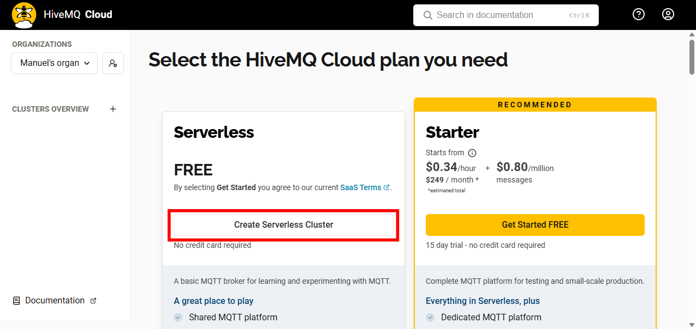
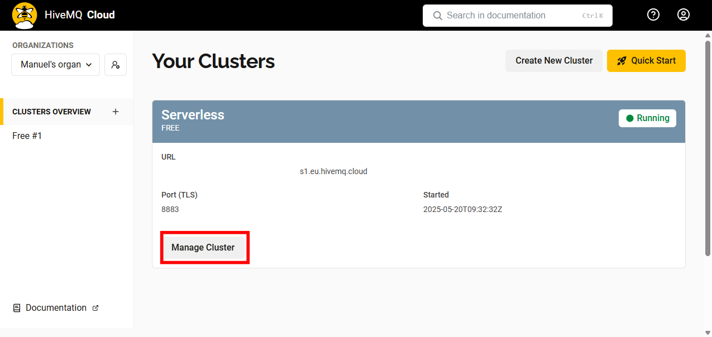
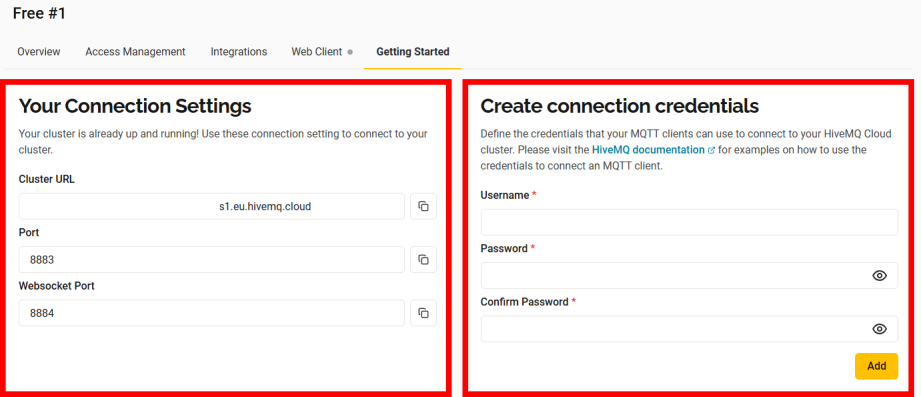
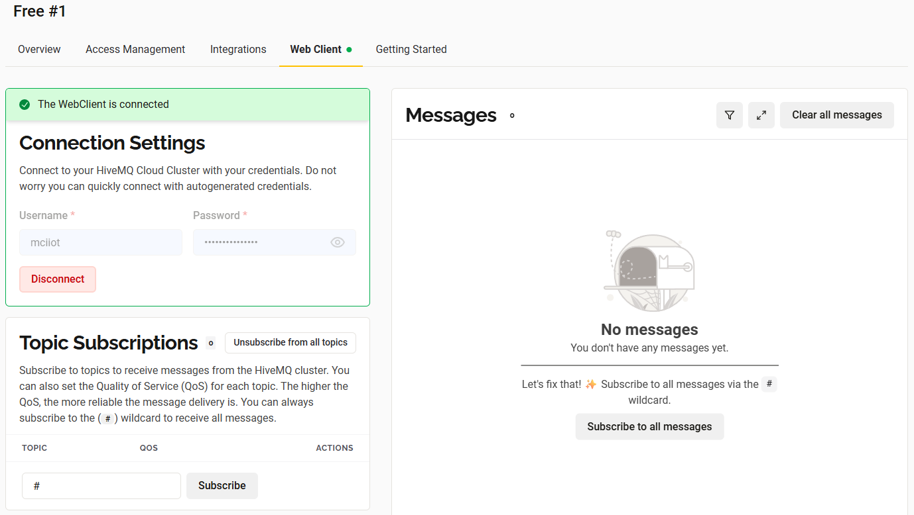
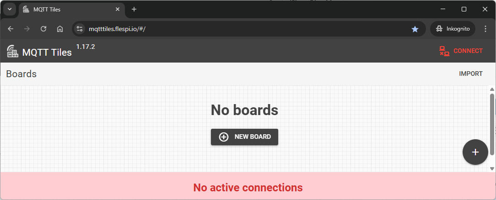
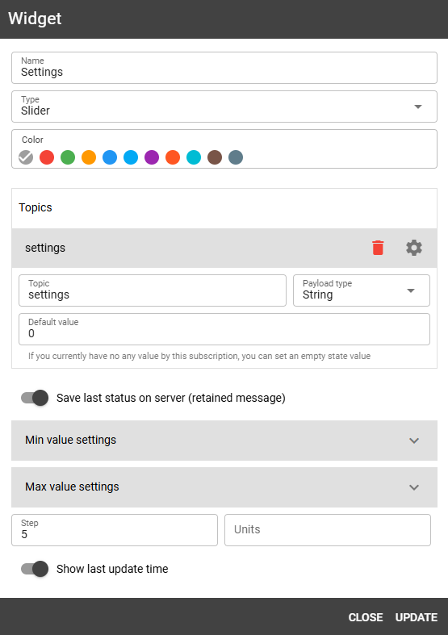
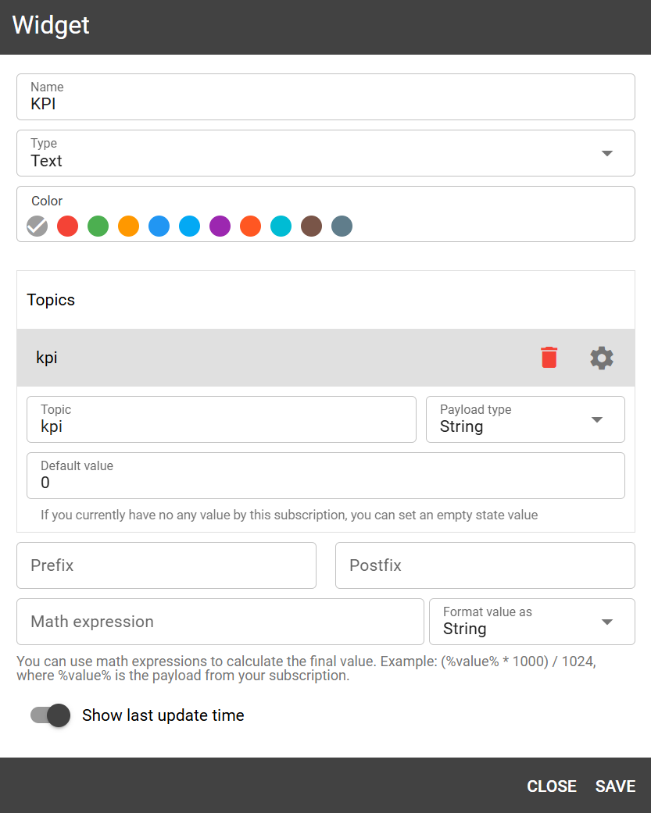

Cloud Dashboard

Let's take a deep breath and think about what we've done so far. We've learned how to work with an ESP32 microcontroller, how to read a sensor and how to control an actuator. But so far, we are only able to interact with our system locally over the USB connection. So, to update the threshold or to manually turn the pump on and off, we need to be physically present at the system. Now, we want to change this!
The goal of this chapter is to make our system more interactive. We want to be able to see the sensor values and control the actuator from everywhere (at least where you have an internet connection). We will build a browser-based dashboard using MQTT Tiles from flespi.io. The dashboard will allow you to monitor sensor values (like soil moisture) and send control commands (like humidity thresholds) directly to your ESP32 device via MQTT.
What is MQTT?
MQTT (Message Queuing Telemetry Transport) is a lightweight, publish-subscribe network protocol designed for reliable communication between devices over low-bandwidth or high-latency networks.
The key concepts of MQTT are:
- Broker: The central server that manages communication between clients.
- Topic: The channel to which devices can publish or subscribe.
- Payload: The message content.
MQTT follows a publisher/subscriber model, which makes it scalable and well-suited for IoT systems.
Publish-Subscribe Model
Think of it like Instagram: users post messages to a channel (topic), and followers (subscribers) get updates in real time.
Setting up a MQTT Broker
Before we can start programming our ESP32, we need to create a MQTT broker. In this example we will use HiveMQ as a free cloud-based broker. Follow these steps to create and configure your own MQTT broker:
- Visit HiveMQ
- Sign in using Google, GitHub, or LinkedIn — or create a free account
-
Select the Free Plan and create a serverless cluster

-
Click on 'Manage Cluster'

-
Switch to the 'Getting Started' tab

- Left side: you'll find all the details needed to connect (Cluster/Broker URL, TLS Port (8883), WebSocket URL)
- Right side:In order to connect to the broker, you need to create a connection credential. Therefore, enter a username and password and click on 'Add'. After creation, credentials can be reviewed and managedunder the 'Access Management' tab
-
To test your connection. Go to the 'Web Client' tab, enter your MQTT credentials and click 'Connect'. You should see a green 'connected' message. +

ESP32 Setup
Hardware
To send and receive data from the ESP32, no additional hardware is required. However, since we will continue building on our irrigation system later, we will keep using the same circuit setup as before. So, no changes to the wiring are needed at this point.
Wi-Fi Connection 🌐
The standard MicroPython installation on the ESP32 includes a built-in Wi-Fi library, making it easy to connect to a wireless network with just a few lines of code. For detailed documentation, see the MicroPython Wi-Fi guide.
To establish an internet connection, the following code can be placed in the boot.py file, as the connection only needs to be initialized once at startup:
Security Tip
Never store credentials directly in your main code. Instead, create a separate config.py file:
WPA2 Enterprise (Eduroam)
Unfortunately, the ESP32 does not support WPA2 Enterprise networks like Eduroam. To work around this, use a different Wi-Fi router or create a personal mobile hotspot.
Task: Connect and Disconnect from Wi-Fi
- Connect to your Wi-Fi network using the
do_connect()function. - After a successful connection, disconnect from the Wi-Fi network. Take a look in the documentation for the
wlanobject to find the function.
Your console log should look something like this:
MQTT Communication 📡
Now that we don't just want to connect our ESP32 to the outside world, but also interact with it (send and receive data), we need to choose an appropriate communication protocol. As discussed earlier, MQTT is widely used in IoT applications and supported by many providers. In this section, we will program the ESP32 to connect to Wi-Fi and the MQTT broker. After that we will send and receive messages over defined MQTT topics.
Initial Setup
We will now expand our existing Wi-Fi connection code by adding MQTT functionality.
Before sending or receiving any data, we must connect to the MQTT broker using credentials.
Add the following parameters to your existing config.py file and replace them with your HiveMQ details:
| config.py | |
|---|---|
config.py in boot.py, we can now begin setting up the MQTT connection.
MQTT Library
To avoid writing the full MQTT protocol implementation ourselves, we'll use a prebuilt MicroPython-compatible MQTT library. This file is not included in the MicroPython standard library and must be downloaded manually:
Save upymqtt.py in the same folder as your boot.py (your project root).
Then extend your boot.py with the following:
ubinasciiis part of the MicroPython standard library and helps generate a unique device ID.
Let's take a closer look at the code. The first lines are for importing the required libraries.
Then a unique device ID is created, which we need for the connection to the MQTT broker.
Then we can define the topics we want to receive (e.g. topic_sub) and the topics we want to send data to (e.g. topic_pub).
Finally, the MQTT credentials from the config.py file are loaded.
Connection
Now we can finally establish a connection to the MQTT broker. We use the MQTTClient class from the upymqtt library. We create an instance of the class and pass the client ID, the MQTT server credentials and the port number.
# Create a client instance; enable SSL for encrypted transport (TLS).
client = MQTTClient(
client_id,
mqtt_server,
user=mqtt_user,
password=mqtt_pass,
port=mqtt_port,
ssl=True
)
Before connecting, we define a callback function that will be called every time a message is received on a subscribed topic:
# Register the callback so incoming packets trigger `sub_cb`.
def sub_cb(topic, msg):
print(f"New Message: {topic}, {msg}")
client.set_callback(sub_cb)
This function will print each received message to the console.
Now we can connect to the broker and subscribe to our chosen topic:
# Open a network connection to the MQTT broker.
client.connect()
print(f"Connected to {mqtt_server} MQTT broker")
# Tell the broker which topic we want to listen to.
client.subscribe(topic_sub)
print(f"Subscribed to {topic_sub} topic")
At this point, your ESP32 is ready to send and receive MQTT messages.
Send and Receive Data
In your main.py, you can now use the following commands to communicate via MQTT:
# Sending the word 'hello'”' on topic_pub.
client.publish(topic_pub, b'hello')
# Receiving messages on topic_sub.
client.check_msg()
check_msg() function checks the broker for new messages. It processes one message per call, so if you expect continuous updates, it's best to place it inside a loop:
while True:
# Receive messages from the broker and process them.
# the callback (`sub_cb`) will be invoked automatically.
client.check_msg()
Task: Receive and send messages
Now it's your turn to send and receive messages. Try the code above and see if you can receive and send messages. Therefore:
- Follow the steps above to connect to the broker (
boot.pyandconfig.py) - Check for new messages in the subscribed topic (
settings) in a loop and publish a message to thekpitopic once before the loop starts. - Got to HiveMQ and click on 'Manage Cluster'. Switch to the 'Web Client' tab and connect with your credentials. On the right side click on 'Subscribe to all messages'. Now you should see the message you published with your ESP32. (Hint: since the publish function is called once before the loop starts, it is a good idea to soft-reset you ESP32 in order to send the message again)
- On the left side in the 'Web Client' tab click on 'Send Message'. Enter the
kpitopic and publish a message with a payload of your choice. You should see the message in the console of your ESP32.
If everything works, there is only one thing left to do: We want to visualize the data in a dashboard.
Dashboard
The basic features of our system are now complete. We can read out sensors, control actuators and send and receive data via MQTT. The final step is to visualize the data in a dashboard. For this we will use MQTT Tiles. MQTT Tiles is a free tool that allows you to create a dashboard to visualize your data without signing up.
Once you visit the website you will find

Connection to the Broker
On the right upper corner you can click on 'Connect' followed by . A new pop-up will appear where you need to enter you connection credentials:
Construct the Host URL
As host enter wss:// followed by the URL of your broker, followed by :8884/mqtt.
If everything is correct you should see a green 'online' status in the upper right corner of MQTT Tiles.
Create a Dashboard
Now it's time to create a dashboard. Click on 'New Board' and enter a name for your dashboard. Leave everything else as it is and click on 'Save & Open'.
Now you can click on 'Add Widget' or the on the right bottom corner. We want to create two widgets now:
-
Slider (topic:
settings)
A slider that publishes a value to the topic
settings. The ESP32 is subscribed to this topic and will receive the value of the slider. If the ESP32 is running, you should see the value of the slider in the console.
-
Text (topic:
kpi)
A text widget that is subscribed to the topic
kpi. Every time the ESP32 publishes a message to this topic, the text widget will display the message.
The result should look like this:
Task: Create a Dashboard
It's time to create a dashboard yourself. Follow the steps above to create a dashboard and:
- Add a slider (topic:
settings) and a text widget (topic:kpi). - Try different payloads and see how the text widget displays the message.
- Try different widgets and see how they work.
Conclusion
Now you know everything you need to know to build a smart plant watering system. We can measure the soil moisture, control the pump, send and receive data via MQTT and visualize the data in a dashboard. It's time to build the final system using the knowledge you have gained so far.
graph LR
subgraph TOP[ ]
direction BT
Cloud[Cloud Dashboard]:::active
end
subgraph MID[ ]
direction LR
Sensors:::active
ESP32[ESP32 Basics]:::active
Actuators:::active
end
Cloud <--MQTT--> ESP32
Sensors --> ESP32
ESP32 --> Actuators
click ESP32 "../setup" _self
click Sensors "../sensors" _self
click Actuators "../actuator" _self
click Cloud "../mqtt" _self
classDef active fill:#950f42,stroke:#333,stroke-width:1px;
class MID subgraphBox;
class TOP subgraphBox2;
classDef subgraphBox fill:#ff000000,stroke:#950f42,stroke-width:2px,color:#fff;
classDef subgraphBox2 fill:#ff000000,stroke:#950f42,stroke-width:0px,color:#fff;